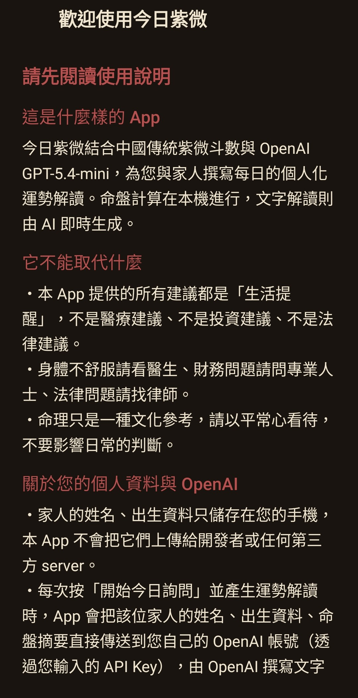
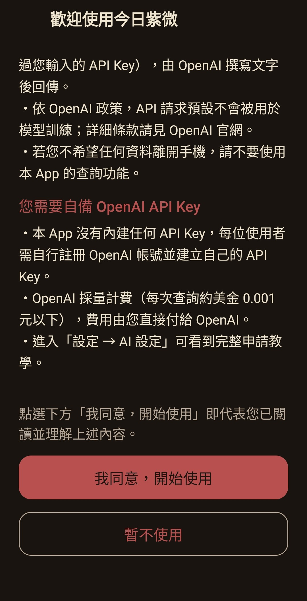
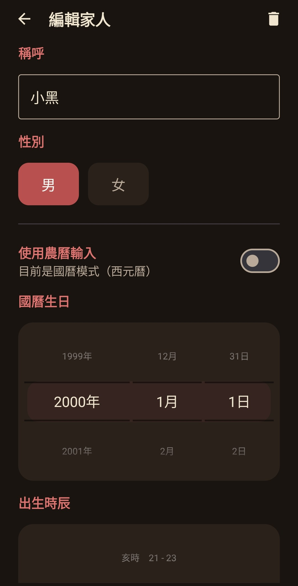
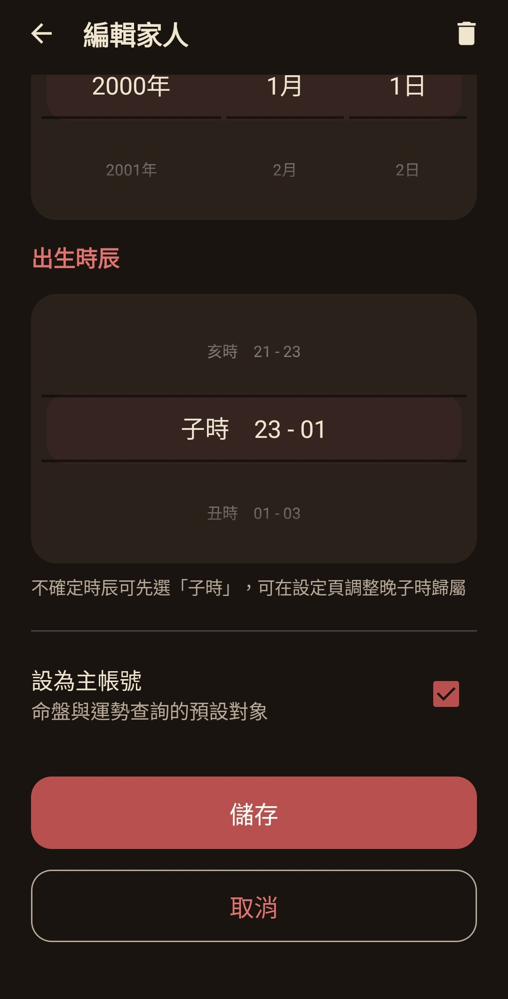
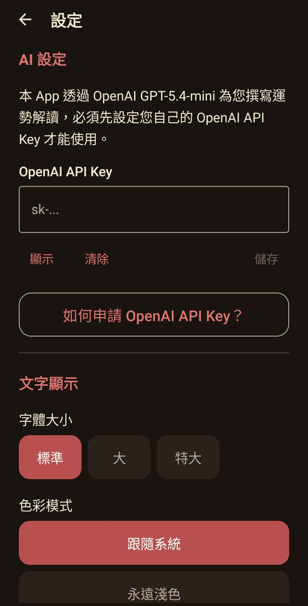
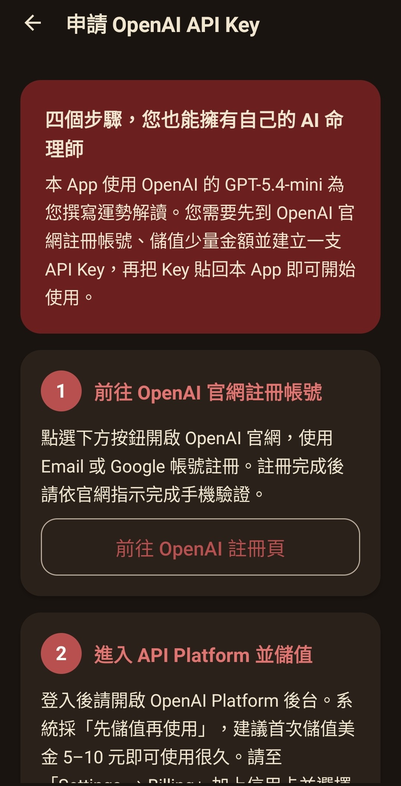
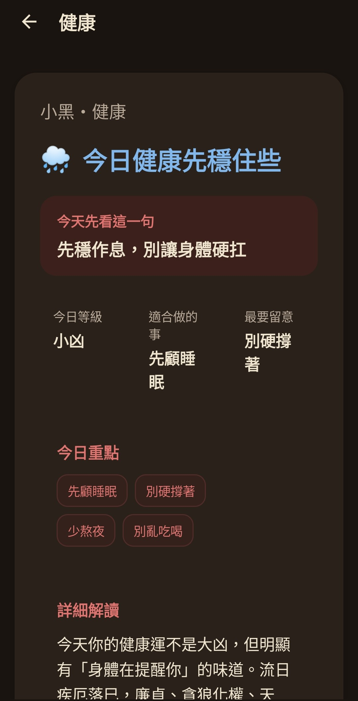
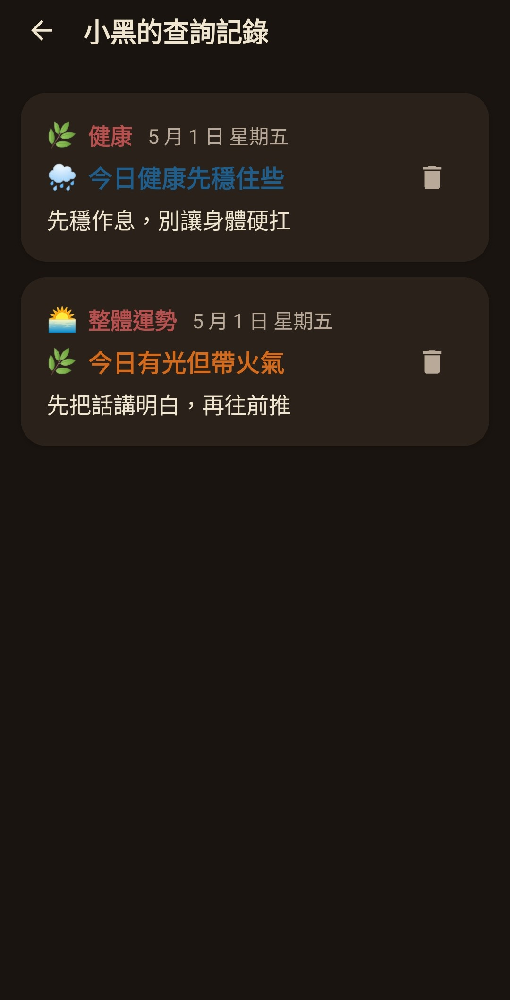
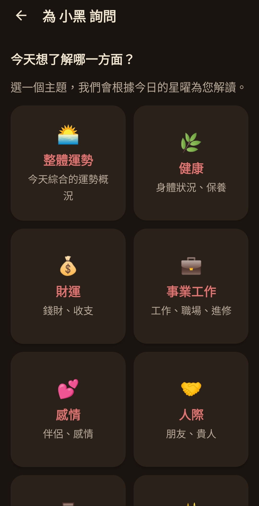

結合傳統紫微斗數與 AI 智慧解讀的個人化運勢 App。
每天用幾分鐘，了解今日的流日運勢，八大主題任選。
僅支援 Android 8.0 以上｜v1.0.0｜約 2.4 MB｜iPhone / iPad 無法安裝

今日紫微是一款把傳統「紫微斗數」與現代 AI 結合在一起的個人化運勢 App。只要輸入出生年月日時，App 就會自動排出你的專屬命盤，每天計算當日的流日運勢，再由 AI 用自然語言寫成你看得懂的解讀。
命盤計算在手機本機完成，完全離線。AI 解讀部分則使用你自己的 OpenAI API Key，資料不經過任何第三方伺服器，費用也由你自己掌控。








| 作業系統 | Android 8.0（API 26）以上，建議 Android 10+ |
| iOS 支援 | 不支援（iPhone / iPad 無法安裝） |
| 檔案大小 | 約 2.4 MB |
| 網路 | 命盤計算不需要；AI 解讀查詢時需要 |
| OpenAI Key | 需自備一組（App 內有申請教學，每次查詢約 NT$0.03 以下） |
| 費用 | App 本身完全免費、無廣告、無內購 |
v1.0.0 ｜ Android 8.0+ ｜ 約 2.4 MB